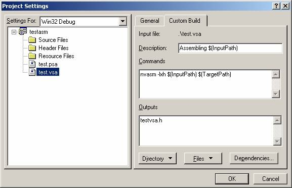

NVASM - Vertex and Pixel Shader Macro Assembler
Overview
NVASM was developed for a variety of reasons. Allowing developers to assemble their Vertex and Pixel Shader source code into object code that can be loaded directly into DX8. Better error reporting functionality was included so that you can double click on the error and be taken directly to the line of the error, inside of Microsoftâ Visual Studioâ. Listing file support is included so that you can look at the output generated by the assembler. Finally it was written so that it is easily extensible, so that when new assembly opcodes are defined, they can be integrated.
Features
How to use NVASM
NVASM can either be used from the command line or integrated inside of Microsoftâ Visual Studioâ. Integration inside Visual Studioâ will be explained later in this document. You can invoke NVASM from the command line. Here is an example of how to do that.
nvasm -lxh test.psa testpsa.h testpsa.lst
NVASM takes options first followed by the source file, then the output file and finally followed by the listing filename. The output and listing filenames are optional and will be auto generated from the source file name if they are not specified. Output take the base filename of the source file and append either .vso , .pso or .h for a vertex shader object file, pixel shader object file or output of a .h file, respectively. The listing file is auto generated from the base filename of the source file with .lst appended. This only is done if the -l option is specified.
NVASM Options
NVASM Error Reporting
NVASM has robust error reporting built in to it. It will not only tell you what line the error was on, so that Visual Studioâ can understand it, it will tell you where the source line is even back tracking though macros. This is a very powerful feature, because now you can just double click on the error and be taken directly to the macro that generated it and you still know the line where the macro was invoked. Here is an example of the error output from NVASM:
.\test.vsa(41) : error Can't use vertex register as destination argument.
.\test.vsa(44) : References ->
constants.h(6) : error Can't use swizzle modifier on the address register.
----- Assembly unsuccessful, 68 line assembled, 10 errors, 3 warnings -----
As you can see from the above example, Line 44 in test.vsa has an error. Sine Line 44 was a macro, the next line tells you that it came from constants.h at line(6). If you double click on this line, you will taken directly to the macro line that generated the error.
Macros
NVASM has several ways to use macros. You can use the #define type of macros that are used in C/C++ or you can use the "macro/endm" keywords. #define macros do not have all the capabilities of the "macro/endm" type of macros.
Here is an example of how to use the "macro/endm" keywords:
macro Test x,y
dp3 r0, %x.x, %y
dp3 r0, %x.y, %inc(%y)
endm
The "macro" line has the word "Test" on it and this is the name of the macro. The next two items on the line are the parameters for the macro, if there are any. The macro body is defined until the assembler reaches the "endm" keyword. When the macro is invoked the assembler looks for the % sign to replace the parameters you specified inside of the macro body. There are four special % macro functions that are available, the %inc(), %dec(), %add() and %sub() macro functions. These take the string between the parentheses and do one of two things. If the text between the parentheses has an explicit number in it, it will replace that number with another number that is either +1 or -1 for %inc and %dec, respectively. If there isn't an explicit number in the text between the parenthesis, then the functions look for the inner most brackets/ parenthesis or scans to the end of the line and inserts the text "+1" or"-1" for %inc and %dec, respectively. The macros %add and %sub take one other argument that is the amount to offset the text. So for example %add(%y, 5) would add 5 to the text. The %add and %sub work in the exact same way as the %inc, %dec macros in terms of text replacement.
Now to invoke the macro in the source you would do the following
Text r1, c[EYE_NORMAL]
This would expand to the following inside the macro:
dp3 r0, r1.x, c[EYE_NORMAL]
dp3 r0, r1.y, c[EYE_NORMAL+1]
If you invoked the macro with the following parameters:
Text r1, r5
This would expand to the following inside the macro
dp3 r0, r1.x, r5
dp3 r0, r1.y, r6
Integration into Microsoftâ Visual Studioâ
The assembler can be integrated into your existing Visual Studioâ Project. To include Vertex Assembly or Pixel Shader Assembly files into your project, follow these steps:
1. Add files to the project with the Project->Add To Project->Files… menu options
2. Setup the Custom Build settings by selecting Project->Settings… menu options and then selecting the assembly files.
3. Click on the Custom Build tab

4. Set the Description box to anything you like
5. Put the NVASM command line in the Commands box. You should specify any options you would like on this line also. The above example uses the listing, expand macros and generate .h file options that will be explained later
6. Set the Outputs box to be the name of the output file you would like generated. The above example says the output file will be named testvsa.h. The $(TargetPath) in the Command box will use this name when calling the NVASM program.
7. Set any Dependencies by clicking on the Dependencies… button. You should put any .h files that are included in the assembly language file in this dialog box. This will ensure that if you update the .h file, Visual Studioâ will re-assemble the assembler file.
8. Click OK.
Contact
If you have any questions or comments regarding NVASM, contact:
Kenneth Hurley
NVIDIA Corporation
2701 San Thomas Expressway
Santa Clara, CA. 95050
khurley@nvidia.com